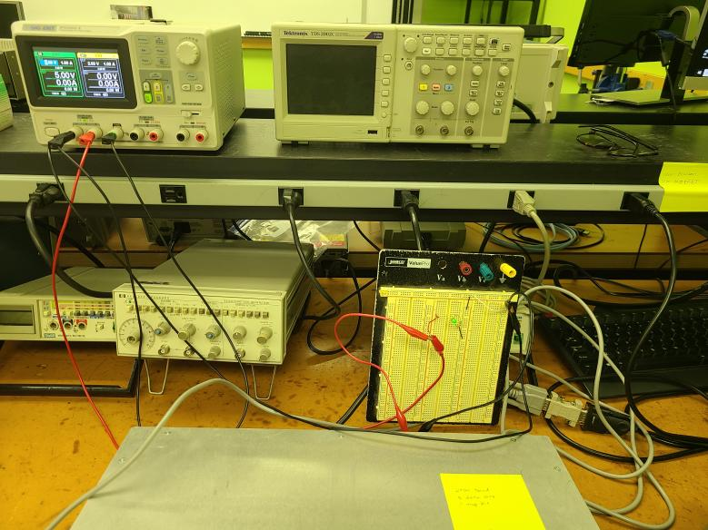
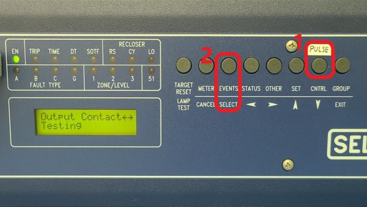
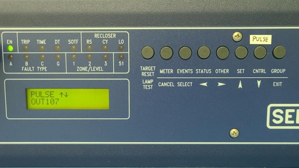

The 311B can be accessed using via Serial Port F using an RS-232 cable. Using a terminal source emulator such as PuTTY or the AcSELerator QuickSet application on the lab computer.
Connect the 311B via serial port F to a terminal
Open Device Manager and identify what port is used for the device.
Open PuTTY or the AcSELerator QuickSet app.
Once you establish a connection you will see a '='.
Enter 'ACC'. Once entered you will be prompted for a password, in which you will enter 'OTTER' to gain level one access
Note: When you type commands/passwords, make sure to spell them properly (backspace doesn't work).
To gain level two access type in '2ACC' then use the password 'TAIL'.
AcSELerator
For the acSELerator app, Set communication parameters to serial, 2400 baud rate, 8 data-bits, 1 stop-bit
Once you establish a connection you will see a '='.
Enter 'ACC'. Once entered you will be prompted for a password, in which you will enter 'OTTER' to gain level one access
To gain level two access type in '2ACC' then use the password 'TAIL'.
LED Circuit
Circuit Diagram

Circuit in Lab When the LED is on, using the PUL OUT107 5 command turns it off for 5 seconds.
Pulse LED
Pulse LED Information
Make sure machine and LED circuit are plugged in/turned on.
The pushbuttons on the front-panel have dual functions (primary/secondary). After a primary function is selected (first row), the pushbuttons revert to operating on their secondary function (second row).
The corresponding front-pane pushbutton for the PUL command is the CNTRL button, which we have labeled "PULSE". Press the PULSE button.
Press SELECT.

f you are prompted for a password, use the left/right arrow keys to navigate which letter you want to change, and use the up/down arrow keys to navigate through the alphabet to select the letter you want. The password is "EDITH_" (make sure to change the last letter to a space, which comes before 'A'). Press SELECT when you are ready to enter the password.
Note: the password can have upper and lowercase letters, '-', '.', numbers 0-9, and a space. According to the manual, the default front panel timeout (FP_TO) is set to 15 min.
After you log in, use the up/down arrow keys to navigate to which output you want to pulse.
Press SELECT

Use the right/left arrow keys to select "Yes". Press SELECT
Note: Output contacts are pulsed for only 1 second from the front panel.